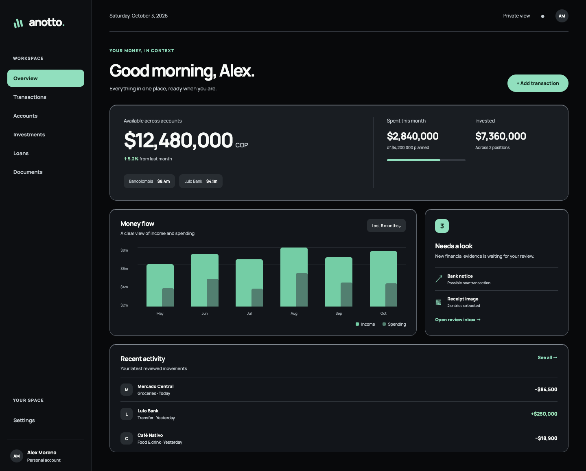
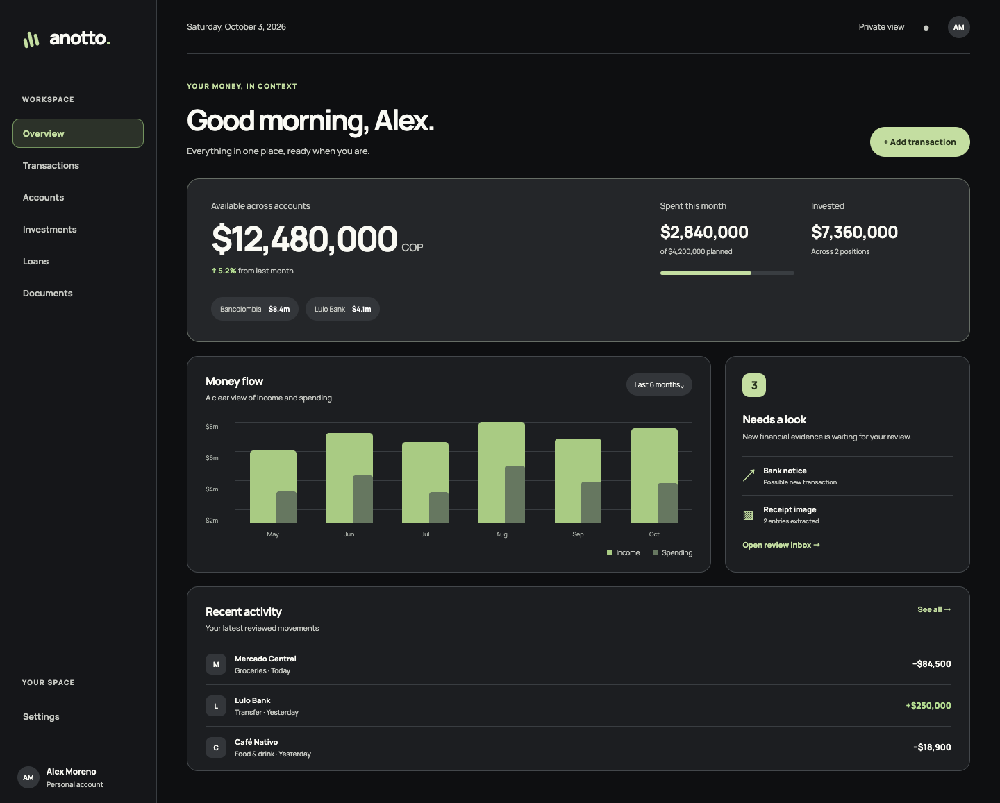
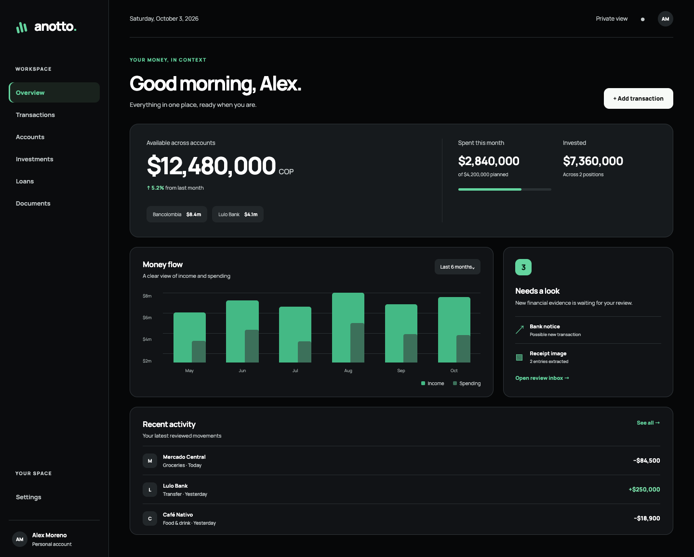
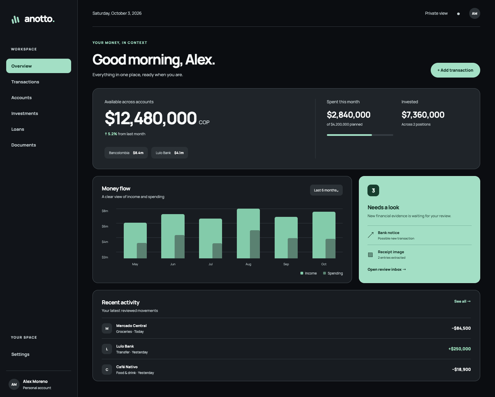

4 · Phosphor Review
Neutral shell, one illuminated review panel.
The same layout, typography, and wordmark from direction A. Four treatments of charcoal surfaces and measured green accents. All account figures are illustrative.




Neutral shell, one illuminated review panel.